GraphQL
for Microservices
Hamza Haiken
Ishan Sital
19 May 2016
Follow along
Link to the slides
Contents
Who are we?
Hamza
Dude from Switzerland who likes to code
- Started at Codestar in 2015
- Currently at Wehkamp, team Purple (CI/CD)
- Blog at http://tenchi.team2xh.net
Ishan
- Started at Codestar in 2015
- Currently doing Scala at Wehkamp
- Team Lime – Wehkamp Universal App
- back-end
- Team Lime – Wehkamp Universal App
Wehkamp
- Switch from .NET monolith to Scala microservices (Blaze Architecture)
- Combination of products/software/applications that are made or bought
- Using the latest technologies
- Lots of fun!
Teams
- Many teams, split in colors
- Each team responsible for their services:
- Maintenance
- Deployment
- Monitoring
- Alerting
CI/CD
- The Blaze Architecture has a strong focus on automation → speed of execution
- Platform deployed using Ansible
- Builds done on Jenkins, with promotion pipelines and integrated testing
- All services in containers, deployed on Mesos
Microservices
- Flexible specification allows for polyglottism:
- Mainly Scala
- Node.js
- .NET
- Metadata about services centralized in Consul
- All services expose a health check endpoint for Marathon
- All services expose Prometheus metrics, big focus on monitoring
- Centralized logging with Elasticsearch
Architecture
Scala @ Wehkamp
- Main language for services
- Aligns with platform goals
- Most services are actor based using Akka
- Easy to scale
- Akka persistence & clustering
- Routing with Spray
Situation
Goals
- Reduce number of connections / calls
- Gives some slack to our Routers and Gateways
- Reduces network load on client app
- Reduce amount of data transferred
- Avoid upstream long review process when model changes
Basically, we want to:
Merge multiple services into one access point
This left us investigating multiple solutions and we chose GraphQL
GraphQL
GraphQL is a query language designed to build client applications by providing an intuitive and flexible syntax and system for describing their data requirements and interactions.
What is it?
- Abstracts different services into one API
- Specification, not a framework
Advantages
- Very flexible query language
- Has interesting features:
- Query shaped like the expected data
- Introspection
- Strongly typed
- Recursive queries
- Looks like JSON
- Reponses are valid JSON
Facebook 
- Started working on GraphQL in 2012
- Needed a “data-fetching API powerful enough
to describe all of Facebook” for their mobile app - Has to be easy to learn by product developers
- Used today in their apps and servers
- Open sourced RFC
Features
Pros:
- Flexibility
- Recursive queries
- Easy to use
- Resilient
Cons:
- Need to build a schema by hand
- Non-trivial resolver implementation
Blaze Architecture goals
- Loosely coupled: prevent unnecessary dependencies
- Highly flexible: enable rapid change
- Consistent
- Resilient
- Elastic: built-in scalability
- Message-driven
- Responsive
We find that GraphQL meets some of these goals quite well:
- Flexible: write the scheme once, build powerful queries
- Consistent: the scheme reflects the consistency of the services
- Elastic: no state, can scale by running multiple GraphQL servers
- Resilient: handles errors quite well.
Returns partial results when some services are unreachable
The only goal not met is the loose coupling, but:
- There’s no current alternative, everyone has to produce a mega-schema
Examples
Case 1
Our app needs to retrieve the title of a product.
Querying the product service
{
"normalized_name": "apple-ipad-mini-smart-cover-roze-0885909632497",
"description": "<p>...</p>",
"published": true,
"product_number": "748002",
"product_type": "REGULAR",
"properties": [{
"label": "Type iPad accessoire",
"value": "Hoes/cover",
"code": "X51"
}, ...],
"alternate_urls": [{
"culture": "nl-nl",
"url": "http://www.wehkamp.nl/elektronica/ipad-tablets/ipad-hoesjes/apple-ipad-mini-smart-cover/C26_6F0_F2P_748002/"
}],
"package_contents": "- iPad mini Smart Cover<br />",
"vas_references": [],
"title": "Apple Ipad mini Smart Cover",
"images": [{
"file_name": "748002_eb_01",
"category": "eb"
}, {
"file_name": "748002_pb_01",
"category": "pb"
}, {
"file_name": "748002_eb_02",
"category": "eb"
}],
"ean": "0885909632497",
"available_stock": 3,
"variants": [{
"size": {
"code": "000",
"label": "000",
"is_default": false
},
"price": 3495,
"scratch_price": 4195,
"vat_code": "VB6",
"stock_info": [{
"from": 1,
"to": 3,
"availability": {
"min_hours": 0
},
"per_appointment": false
}],
"vat_percentage": 2100,
"original_price": 4195,
"available_stock": 3,
"shipping": {
"costs": 0,
"vat_code": "WB6",
"vat_percentage": 2100
}
}]
}Total response length: 1358B (1.326KiB)
Only get what you ask for
{
product(748002) {
title
}
}{
"product": {
"title": "Apple Ipad mini Smart Cover"
}
}Total response length: 64B (0.0625KiB)
Case 2
We need the recommendations for a certain product number,
and for each we want the title and image.
For 10 recommendations, we would need to:
- Query the recommendations service
- Parse the response
- For each parsed product number:
- Query the product service
- Parse the response
Merging services
{
recommendations(product_number: "748002") {
products {
product {
title
primary_image {
file_name
}
}
}
}
}{
"data": {
"recommendations": {
"products": [
{
"product": {
"title": "Apple iPad mini met Retina Display 16GB Wi-Fi",
"primary_image": {
"file_name": "114015_pb_01"
}
}
},
{
"product": {
"title": "Tucano iPad Air 2 Filo folio hoes",
"primary_image": {
"file_name": "545728_pb_01"
}
}
},
{
"product": {
"title": "Apple iPad Air met Retina Display 16GB Wi-Fi",
"primary_image": {
"file_name": "114718_pb_01"
}
}
},
{
"product": {
"title": "Valenta iPhone 6 plus/ 6s plus flipcover",
"primary_image": {
"file_name": "489592_pb_01"
}
}
},
{
"product": {
"title": "C&A Palomino sweater",
"primary_image": {
"file_name": "653834_pb_01"
}
}
},
{
"product": {
"title": "C&A Palomino trui",
"primary_image": {
"file_name": "660709_pb_01"
}
}
},
{
"product": {
"title": "C&A Palomino jurk",
"primary_image": {
"file_name": "691678_pb_01"
}
}
},
{
"product": {
"title": "Melkco iPhone 6/6s Herman leren flipcover",
"primary_image": {
"file_name": "646375_pb_01"
}
}
},
{
"product": {
"title": "C&A Palomino sweater",
"primary_image": {
"file_name": "674561_pb_01"
}
}
},
{
"product": {
"title": "C&A Palomino sweater",
"primary_image": {
"file_name": "626283_pb_01"
}
}
}
]
}
}
}| Operation | Connections | Response length | Efficiency |
|---|---|---|---|
| Raw | 11 | ~14KiB | 3.48% |
| GraphQL | 1 | ~2KiB | 24.41% |
Case 3
For a given product, we need:
- Name
- Main picture
- 10 recommendations, and for each:
- Name
- Main picture
- 10 recommendations, and for each:
- Name
- Main picture
Recursion
{
product(product_number: "748002") {
title
primary_image { file_name }
recommendations {
products {
product {
title
primary_image { file_name }
recommendations {
products {
product {
title
primary_image { file_name }
}
}
}
}
}
}
}
}{
"data": {
"product": {
"title": "Apple Ipad mini Smart Cover",
"primary_image": {
"file_name": "748002_pb_01"
},
"recommendations": {
"products": [
...
]
}
}
}
}| Operation | Connections | Response length | Efficiency |
|---|---|---|---|
| Raw | 122 | ~155KiB | 3.2% |
| GraphQL | 1 | ~29KiB | 17.2% |
Demo 1
Query service
Given all the goals cited earlier,
we set out to create a Query Service,
aimed at the mobile app (for now)
“BFF” Pattern
- “Backends For Frontends”
- Mobile App logic
- Named Queries
Examples
Mobile BFF:
/mobile/product_title?id=ID
/mobile/recommendation_list?id=ID
...Desktop BFF:
/desktop/product_informations?id=ID
/desktop/recommendation_tree?id=ID
...Microservice architecture
- Scattered data
- Network costs
- “BFF” fit
- Dual functionality:
- Named Query BFF
- Internal GraphQL endpoint
Raw GraphQL
POST query-service.blaze/graphql HTTP/1.1
{
product(748002) {
title
}
}Named query BFF
GET query-service.blaze/mobile/get_title?id=748002 HTTP/1.1Query service architecture
- Two main routes using Spray
- Named Queries BFF endpoint
- Raw GraphQL endpoint
- Schema
- Resolvers
- Helpers
Sangria 
- Young library
- Scala alternatives?
- Up-to-date
Schema definition
- Map JSON responses from external services
- case classes
- Nesting
- Reference to other objects
case class Recommendation(score: Option[BigDecimal], product_number: Option[String]) {
@GraphQLField
def product(implicit ctx: Ctx): Remote[Product] = remote(product_number)
}Resolver definition
First, we need to:
- Define which service needs to be called
- What is the REST endpoint (with placeholder variables)
- A magical helper function creates the resolver that:
- Fetches the JSON
- Parses and returns a
JsObject
implicit val RecommendationsResolver: TypedEntityResolver[Recommendations, String] =
getSingleEntityResolverId("recommendations-gateway", "/$id?panel=pdp_rec")Then, Sangria needs to know how to convert
from JsObject to our case class Recommendation
private implicit val RecommendationFormat = jsonFormat2(Recommendation)Those two lines are the only things we need to write
when we need to add a new service.
- Sangria needs a
TypedEntityResolverclass that knows where to get data - The
resolveSingle()method queries the correct service and returns aJsObject
case class GetSingleEntityResolver(serviceKey: String, path: String)
extends TypedEntityResolver[JsObject, GetQuery] {
def resolveSingle(args: GetQuery)
(implicit ctx: GraphQlContext): Future[Option[JsObject]] = {
val request = HttpRequest(
HttpMethods.GET,
replaceUriPlaceholders(Uri(ctx.services(serviceKey) + path), replace),
...
)
ctx.sendReceive(request).map(parseJsonObject)
}
override def resolve(...) = items map { item ⇒ resolveSingle(item.args) }
}- Hard coupling between the query service and other services
- Also need to actively maintain a schema
Is it worth it? Yes:
- Merging services is done in a transparent way
- Coupling is not added, but moved
- The APIs don’t change that much
- Schema easy to write and maintain
- Integration testing alerts from API changes
Named queries
To avoid putting logic in apps, we can use named queries:
query($product_numbers: [String!]!) {
products(product_numbers: $product_numbers) {
title
properties {
label
}
}
}- Looks like a normal query, wrapped in a
queryobject with parameters - Stored in namespaces (one for each client BFF, for example
mobile)
In our service, we store named queries in files, which has some advantages:
- They are validated at test time
- Easy to maintain a folder hierarchy
- Better for version control
- All named queries can be compiled at boot time to save resources
Security
- GraphQL only used internally, no outside access
- Public facing endpoint are named queries, which remove a lot of external control
- Public access still goes through the rest of the platform for other security checks
Demo 2
Alternatives
Before jumping in with GraphQL, we also investigated:
Both had more cons than pros compared to GraphQL
GraphQL vs Finagle
- Merging services:
- In GraphQL, you first set up the resolvers and Schema,
then you can combine multiple services at a whim with the powerful query syntax - In Finagle, you need to explicitly write “Proxies”
for each combination of services that you want to merge
- In GraphQL, you first set up the resolvers and Schema,
GraphQL vs Falcor
- GraphQL is a specification, with multiple implementations
- Falcor is a JavaScript server application
Conclusion
Results
- Less data used: between 10% and 20% of original response sizes
- Less connections: only one connection for everything
- Tailored responses: only get what was asked for
Aftermath
- The mobile team is happy
- Current development app uses the new named queries
- Investment in the schema enables us to re-use it
Future
- Automatic schema generation through documentation
- Add more BFFs
Questions
?
Thank you